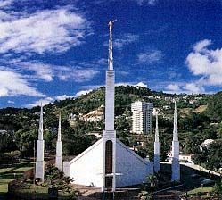
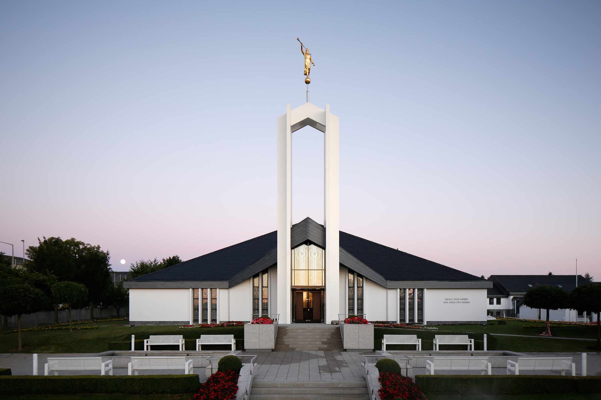
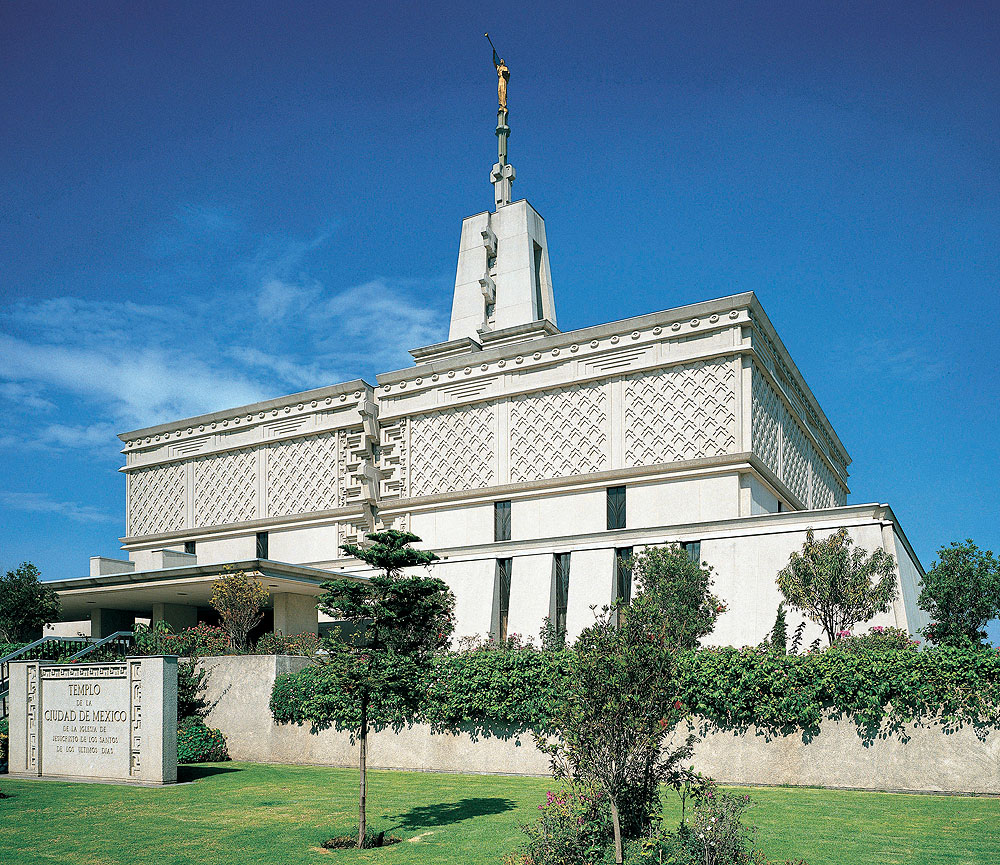
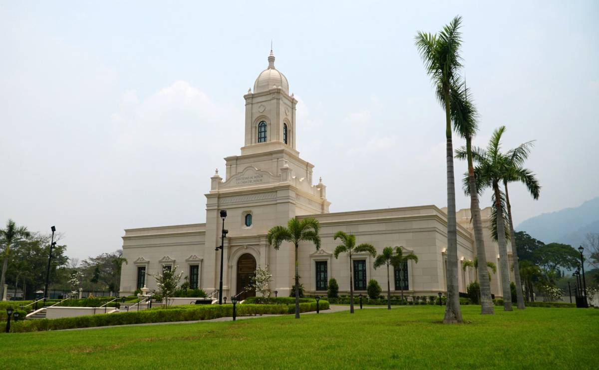

Temple Album
☰
Home
Old
New
Large
Small
Temple Gallery
Temples from around the world
Tegucigalpa, Honduras

Guatemala City, Guatemala

Freiberg, Germany

Mexico City, Mexico
Salt Lake City, Utah, USA
Rome, Italy
Tokyo, Japan

San Pedro Sula, Honduras
Logan, Utah, USA